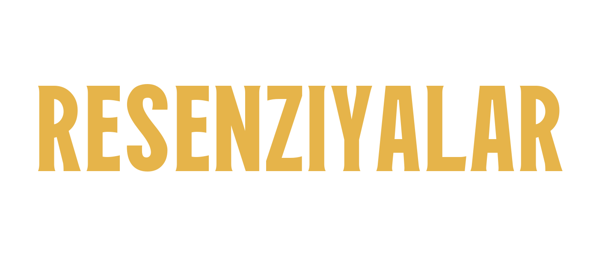

MÜNDƏRİCAT
P. J. Möbius: „Über aufsteigende Lähmung nach Keuchhusten“ (1887)
P. J. Möbius. Göyöskürəkdən sonrakı yuxarı qalxan iflic haqqında (Centralblatt für Nervenheilkunde, № 5, 1887, s. 129).
6 yaşlı bir oğlan 1886-cı ilin sentyabrında göyöskürəyə tutulur; oktyabrın əvvəlində qusmaya və zahirən huşun itməsinə gətirib çıxaran şiddətli öskürək tutmaları başlayır. Xəstəliyin başlanmasından 6 həftə sonra uşaq yeriməkdən imtina etməyə başlayır, ayaq üstə duranda isə bükülüb çökür. Ağrıdan heç vaxt şikayət etmir. Bu vaxt aparılan ilk müayinə göstərir: yerimək və ayaq üstə durmaq mümkün deyil. Uzanmış vəziyyətdə ayaqlar bütün istiqamətlərdə hərəkət etdirilir, lakin gücsüz şəkildə. Ayaq əzələləri süstdür, atrofiyaya uğramayıb, elektrik oyanıqlığı normaldır. Diz refleksləri yoxdur. Həssaslıq pozulmayıb. Ayaq əzələlərinin təzyiqə həssaslığı, görünür, yoxdur. — Üç həftə sonra ayaqlar güclənmiş, lakin bunun əvəzində qollar, boyun əzələləri və diafraqma iflic olmuşdur. Uşaq əllərini tərpətməkdən imtina edir, ən azı çiyin oynağında aydın hərəkət pozğunluqları görünür; baş öz ağırlığı ilə sallanır; epiqastrium hər nəfəsalmada içəri çökür. Bundan əlavə, səs zəifləmişdir, içərkən maye tez-tez nəfəs yoluna keçir. Nə atrofiya, nə də anesteziya var; qarın və kürək əzələləri, sidik kisəsi və düz bağırsaq iflicə tutulmayıb. Sonrakı günlərdə vəziyyət ağırlaşır, tənəffüs çətinləşir, sianoz yaranır; lakin tezliklə yaxşılaşma başlayır. 1887-ci il yanvarın 8-də artıq heç bir yerdə iflic aşkar edilmir. Fevralın əvvəlində patellyar reflekslər bərpa olunur.
Möbius güman edir ki, bu halda söhbət difteriya ifliclərinə bənzər şəkildə əvvəlki infeksiyanın fəsadından gedir. Yuxarı qalxan iflic formasının göyöskürəyin vurduğu zədə üçün səciyyəvi olub-olmadığını sonrakı müşahidələr göstərməlidir. O, xəstəliyin ocağını periferik sinirlərdə axtarmağa meyillidir. (Göyöskürəkdən sonrakı ifliclərə dair indiyədək yalnız Yuraş [Jhb. f. K. XIV. 277. 1879] bir hal bildirmişdir; orada, ehtimal ki, Mm. cricoarytaenoidei post. iflici olmuşdur. [Jurnalın redaksiyası.])
Freyd (Vyana).
[«Centralblatt für Kinderheilkunde», 1-ci cild, 1887, № 3, s. 62–63.]
A. Forel: „Der Hypnotismus“ (1889). I hissə
Forel: „Der Hypnotismus, seine Bedeutung und seine Handhabung“ [Hipnotizm, onun əhəmiyyəti və tətbiqi]. Stuttgart, F. Enke, 1889. I.
Şöhrətli sürixli psixiatrın cəmi 88 səhifəlik bu kitabçası 1888-ci ildə Zeitschrift für die gesammte Strafrechtswissenschaft jurnalının IX cildində dərc olunmuş, hipnotizmin cinayət hüququ baxımından əhəmiyyətinə dair məqalənin genişləndirilmiş variantıdır. Yəqin ki, bu əsər uzun müddət hipnotizmə dair alman ədəbiyyatında görkəmli yer tutacaqdır. Yığcam, az qala katexizm üslubunda yazılmış, şərhin böyük aydınlığı və ifadənin qətiyyəti ilə seçilən kitab «hipnotizm təlimi» adı altında birləşdirilən hadisə və problemlərin bütün dairəsini əhatə edir, faktları nəzəriyyələrdən uğurla ayırır, heç yerdə hər şeyi diqqətlə yoxlayan həkimə xas ciddiliyi əskik etmir və elmi müzakirəyə heç yaraşmayan o coşqun, şişirdilmiş tondan hər yerdə qaçır.
Şərh yalnız bir dəfə coşur və Forel belə bir hökm söyləyir: «Mənim fikrimcə, təlqinin psixoloji əhəmiyyətinin Breyd və Lyebo tərəfindən kəşfi o qədər əzəmətlidir ki, onu insan zəkasının ən böyük kəşfləri, daha doğrusu, idrak nailiyyətləri ilə müqayisə etmək olar.» Bu sözlərdə hipnozun həddən artıq şişirdilməsini görən kəs qəti hökmünü o vaxtadək təxirə salsın ki, yaxın illər hipnozun vəd etdiyi böyük nəzəri və praktik çevrilişlərdən nə qədərinin həqiqətən onun vasitəsilə həyata keçə biləcəyini aydınlaşdırsın. Hazırda «spiritizm»in məşğul olduğu, hipnotizmlə bağlı o qaranlıq problemlərdən (fikir ötürülməsi və s.) söz açarkən Forel əsl elmi təmkin nümayiş etdirir.
Anlaşılmır ki, şəhərimizin avtoritetlərindən biri nə üçün həkimlər cəmiyyəti qarşısında müəllifimizi «cənublu Forel» adlandırmış və ona daha soyuq düşüncə tərzinin nümunəsi kimi hipnozun guya «daha şimallı» bir əleyhdarını qarşı qoymuşdur. Canlı tədqiqatçıların elmi problemlərə dair hökmlərini onların milliyyətinə və ya vətəninə işarə etməklə bir kənara atmağa çalışmaq bu qədər yolverilməz olmasaydı belə, professor Forel 46-cı şimal en dairəsində doğulub böyümək bəxtiyarlığına malik olmasaydı belə [2], bu kitabçanı oxuyub onun müəllifinin adətən temperamentə qapılaraq məntiqdən ayrıldığı nəticəsinə gəlməyə haqqımız olmazdı.
[2] Forelin məktubundakı bir qeydindən öyrəndiyimə görə.
Əksinə, bu kiçik kitab hipnozun müalicə vasitəsi kimi dəyərini və əhəmiyyətini öz zəngin təcrübəsi ilə öyrənmiş ciddi bir həkimin əsəridir və onun «istehzaçılara və inanmayanlara» belə müraciət etməyə haqqı var: «Hökm verməzdən əvvəl yoxlayın». Onun ardınca dediyi sözlərlə də razılaşmaq lazım gələcək: «Hipnotizm haqqında hökm verə bilmək üçün insan özü bir müddət hipnoz etmiş olmalıdır». Düzdür, hipnozun çoxlu əleyhdarı var ki, öz hökmlərinə daha rahat yolla gəlib çatmışlar.
Onlar yeni müalicə üsulunu, məsələn, yeni tövsiyə olunmuş bir dərmanla davrandıqları kimi, yoxlamamış, qərəzsiz və diqqətlə tətbiq etməmiş, əksinə, hipnozu əvvəlcədən rədd etmişlər; indi isə bu üsulun misilsiz müalicəvi təsirləri barədə heç bir bilikləri olmadığından heç nə onlara mane olmur ki, ona qarşı ikrahlarını – bu ikrah nəyə əsaslanırsa əsaslansın – ən kəskin və ən ədalətsiz şəkildə ifadə etsinlər. Onlar hipnozun təhlükələrini hədsiz şişirdir, ona bir-birindən iyrənc adlar qoyur və hipnozla əldə edilmiş müalicə uğurları barədə artıq gözdən keçirmək belə çətin olan hesabatlar selinə buna bənzər kahin kəlamları ilə cavab verirlər: müalicə uğurları heç nə sübut etmir, onların özləri hələ sübuta möhtacdır [3].
[3] Saray müşaviri Meynert, imperator-kral Həkimlər Cəmiyyətinin bu il 7 iyunda keçirilmiş iclasında.
Əleyhdarlığın bu qədər şiddətli olduğunu nəzərə alsaq, onların xəstələrinin rifahı naminə hipnozdan istifadə etməyi özlərinə borc bilən həkimləri niyyət natəmizliyində və qeyri-elmi düşüncə tərzində ittiham etmələri təəccüblü deyil; istər açıq, istərsə də az-çox örtülü eyhamlarla irəli sürülsün, belə ittihamların elmi müzakirədə yeri olmamalıdır. Bu əleyhdarlar arasında saray müşaviri cənab Meynert kimi şəxslər – öz əsərləri ilə böyük nüfuz qazanmış, həm həkim, həm də qeyri-həkim ictimaiyyətinin bu nüfuzu indi heç bir əlavə yoxlama olmadan bütün sözlərinə şamil etdiyi şəxslər – olduqda, hipnotizm işinə müəyyən zərər dəyməsi, əlbəttə, qaçılmazdır.
Əksər insanlar çətinliklə qəbul edir ki, nevropatologiyanın bəzi bölmələrində böyük təcrübə qazanmış və böyük fərasət göstərmiş bir tədqiqatçı başqa problemlərdə avtoritet kimi istinad olunmaq üçün heç bir səriştəyə malik olmaya bilər; böyüklüyə, xüsusən də intellektual böyüklüyə hörmət isə, şübhəsiz, insan təbiətinin ən yaxşı xüsusiyyətlərindəndir. Lakin bu hörmət faktlara hörmət qarşısında geri çəkilməlidir. Avtoritetə söykənməyi faktları öyrənməklə qazanılmış öz hökmündən aşağı tutduğunu açıq söyləməkdən çəkinmək lazım deyil.
Hipnoz məsələsində, rəyçi kimi, müstəqil hökmə gəlmiş hər kəs özünə təsəlli verəcək ki, hipnozun nüfuzuna bu yolla vurulan zərər yalnız zaman və məkan baxımından məhdud ola bilər. Təlqinlə müalicəni tibbin müalicə vasitələri xəzinəsinə daxil etmək istəyən hərəkat başqa yerlərdə artıq zəfər çalmışdır və nəhayət Almaniyada, daha doğrusu, Vyanada da məqsədinə çatacaqdır. Həkimlərdən obyektiv dəlillərə açıq olan hər kəs hipnotik terapiyanın guya qurbanlarının müalicədən sonra əvvəlkindən az əziyyət çəkdiyini və öz vəzifələrini daha yaxşı yerinə yetirdiyini gördükdə – öz xəstələrim haqqında bunu deyə bilərəm – daha yumşaq mövqe tutacaqdır.
Öz sınaqları ona göstərəcək ki, hipnoza qarşı irəli sürülmüş bir sıra ittihamlar xüsusən ona deyil, eyni dərəcədə bütün terapiyamıza aiddir, hətta hamımızın tətbiq etdiyi bəzi ayrı-ayrı üsullara qarşı hipnozdan daha çox əsasla yönəldilə bilər. O, həkim kimi görəcək ki, xəstələrini zərərsiz bir psixi təsirlə əzabdan qurtara bildiyi halda hipnozdan istifadə etməmək, onları əziyyət içində qoymaq mümkün deyil.
O, özünə deməli olacaq ki, hipnozu «süni dəlilik» və ya «süni histeriya» adlandırmaqla o, zərərsizliyindən və müalicəvi dəyərindən heç nə itirmir – necə ki, məsələn, vegetarianlar hiddətlə əti «leş» adlandırıb təhqir etdikdə ət də öz dadından və qidalılığından heç nə itirmir. Bir anlığa unudaq ki, hipnozun təsirlərini təcrübədən bilirik, və özümüzdən soruşaq: hipnozdan a priori hansı zərərli təsirləri gözləməliyik?
Hipnozla müalicə üsulu, birincisi, hipnotik halın yaradılmasından, ikincisi isə hipnoz olunmuş şəxsə təlqin verilməsindən ibarətdir. Bu iki aktdan hansı zərərli olmalıdır? Hipnozun yaradılmasımı? Lakin hipnoz, ən mükəmməl alındıqda, hamımıza bu qədər tanış olan, düzdür, bir çox cəhətdən hələ də anlaşılmamış adi yuxudan başqa bir şey deyil; zəif ifadə olunduqda isə yuxuya getmənin müxtəlif mərhələlərinə uyğun gəlir.
Doğrudur ki, yuxuda biz psixi tarazlığımızı itiririk, yuxu zamanı beynimizin fəaliyyəti pozulur, bir çox cəhətdən dəliliyi xatırladır; lakin bu bənzərlik yuxudan ruhən də təzələnib güc toplamış halda oyanmağımıza mane olmur. Meynertin kortikal fəaliyyətin zəifləməsinin zərərli təsirləri haqqında mülahizələrinə və hipnotik eyforiyanın mənşəyini necə izah etdiyinə görə, biz həkimlərin, əslində, insanları yuxusuz saxlamaq üçün hər cür əsasımız olardı. Lakin insanlar hələ ki yatmağı üstün tuturlar, biz də hipnotik terapiyanın təhlükələrinin hipnoz etmə aktının özündə olmasından qorxmayaq.
Deməli, zərərli amil təlqin verilməsidir? Mümkün deyil, çünki əleyhdarların hücumları, diqqətəlayiqdir ki, heç də təlqinə qarşı yönəlmir. Onların sözlərinə görə, təlqindən istifadə həkimə çoxdan tanış olan bir şeydir: «axı biz hamımız daim təlqin edirik», – deyirlər; həqiqətən də, həkim – hətta hipnoz tətbiq etməyən həkim də – şəxsiyyətinin gücü, sözünün təsiri və öz – avtoriteti ilə hər hansı xəstəlik əlamətini xəstənin diqqətindən sıxışdırıb çıxardığı zamankı qədər heç vaxt məmnun olmur.
Bəs nə üçün həkim, gözlənilmədən bir dəfə alındıqda onun üçün həmişə bu qədər arzuolunan olan təsirə planlı şəkildə can atmamalıdır? Ola bilsin ki, yenə də qəbahətli olan təlqindir – azad şəxsiyyətin həkim tərəfindən boğulması, axı həkim süni yuxuda da yatan beyni idarə etmək gücünü əlində saxlayır. Ən qəti deterministləri birdən-birə təhlükəyə məruz qalmış «şəxsi iradə azadlığı»nın müdafiəçiləri kimi görmək, xəstələrinin «azad yüksələn ruhi fəaliyyəti»ni böyük dozalarda brom, morfin və xloralla boğmağa adət etmiş psixiatrın təlqinedici təsiri hər iki tərəf üçün alçaldıcı bir şey kimi ittiham etdiyini eşitmək olduqca maraqlıdır.
Doğrudanmı unutmaq olar ki, hipnotik təlqin vasitəsilə xəstənin müstəqilliyinin boğulması həmişə yalnız qismən baş verir və xəstəlik əlamətlərinə qarşı yönəlir; yəqin ki, yüz dəfə izah edildiyi kimi, insanın bütün ictimai tərbiyəsi yararsız təsəvvür və motivlərin boğulmasına və onların daha yaxşıları ilə əvəz olunmasına əsaslanır; həyat hər gün hər bir insana elə psixi təsirlər gətirir ki, bunlar oyaqlıqda müdaxilə etsələr də, onu ağrı və ya qorxu təsəvvürünü təsirli əks-təsəvvürlə aradan qaldırmağa çalışan həkimin təlqinindən qat-qat güclü şəkildə dəyişir? Xeyr, hipnotik terapiyada sui-istifadədən başqa təhlükəli heç nə yoxdur; həkim kimi bu sui-istifadədən qaçmaq üçün özündə kifayət qədər ehtiyatlılıq və ya niyyət saflığı görməyən kəs yeni müalicə üsulundan uzaq dursa, yaxşı edər.
Dəb seli onları buna məcbur etməzdən əvvəl hipnozu müalicə vasitəsi kimi tətbiq etməyə cəsarət edən həkimlərin şəxsiyyətinə verilən qiymətə gəlincə, rəyçi belə hesab edir ki, böyük adamların çox vaxt rast gəlinən dözümsüzlüyünü müəyyən dərəcəyədək nəzərə almaq yaraşar. Ona görə də rəyçi saray müşaviri cənab Meynertin travmatik nevrozlar haqqındakı məqaləsinin oxucularına onu (rəyçini) və həyat yolunun bir hissəsini hansı səbəblərdən təqdim etdiyinə burada toxunmağı hələ yerinə düşən, ümumiyyətlə də geniş oxucu dairəsi üçün kifayət qədər maraqlı saymır.
Rəyçiyə daha vacib görünür ki, elmi məsələlərə dair hökmlərini hazır şəkildə böyük bir avtoritetdən almağa alışmış və bəlkə də bu zaman öz ayırd etmə qabiliyyətlərinin yetərsizliyini düzgün dərk etməkdən çıxış edən kəslər qarşısında hipnozun işini müdafiə etsin. O, bunu Meynertin əleyhdar avtoritetinə hipnoza daha xeyirxah münasibət göstərmiş başqa avtoritetləri qarşı qoymaqla etmək niyyətindədir.
O xatırladır ki, bizdə hipnozun elmi tədqiqinə təkan professor H. Obersteynerdən gəlmişdir və universitetimizə yalnız indi dəvət olunmuş professor v. Krafft-Ebinq kimi görkəmli psixiatr və nevroloq hipnozu yüksək qiymətləndirdiyini heç bir çəkinmədən bəyan edir və ondan həkimlik fəaliyyətində ən böyük uğurla istifadə edir. Göründüyü kimi, bu adlar hökm çıxarmaq üçün başqasına möhtac olan elə kəsləri də qane edə bilər ki, onların etibarı elmi avtoritetin müəyyən milliyyət, irq və coğrafi en şərtlərinə cavab verməsini tələb edir, inamları isə vətənin sərhəd dirəklərində dayanır.
Vətəndən kənardakı elmi əhəmiyyətə də həssas olan hər kəs professor Foreli də elə adamlar sırasına qatacaq ki, onların hipnozun tərəfini saxlaması bu müalicə üsulunun guya alçaq və ləyaqətsiz olması barədə onu arxayın sala bilər. Xüsusən rəyçi Meynertin hücumları zamanı hipnozu müdafiə etməklə özünü yaxşı cəmiyyət içində hiss etmişdir. Professor Forel sübut edir ki, insan çox diqqətəlayiq beyin anatomu olub, eyni zamanda hipnozda cəfəngiyyatdan başqa bir şey görə bilər.
Saray müşaviri cənab Meynertin rəyçinin keçmişinə lütfkarlıqla bəxş etdiyi [4] «fiziologiya sahəsində dəqiq təlim keçmiş həkim» adını ondan da əsirgəmək olmaz; rəyçi bəd Parisdən korlanmış halda qayıtdığı kimi, professor Forel üçün də Nansiyə, Bernheymin yanına səfər qarşımızdakı bu əla kitabı borclu olduğumuz o yeni fəaliyyətin başlanğıc nöqtəsi olmuşdur. (İkinci məqalə ardınca gələcək.)
[4] Saray müşaviri cənab Meynertə yenidən düzəliş verməliyəm. O, mənim haqqımda deyir ki, guya «burada hipnoz üzrə təlim keçmiş praktik kimi fəaliyyət göstərirəm». Bu, həqiqəti tam ifadə etmir və kənar adamlarda yanlış təsəvvür yarada bilər ki, hipnoz etməkdən başqa heç nə ilə məşğul olmuram. Əslində mən «burada» sinir həkimi kimi yaşayıram və belə həkimin ixtiyarında olan bütün terapevtik üsullardan istifadə edirəm. Lakin indiyədək hipnozun tətbiqi ilə əldə etdiyim uğurlar bu güclü köməkçi vasitədən gələcəkdə də imtina etməməyi mənim üçün borca çevirir.
Dr. Ziqm. Freyd.
[«Wiener medizinische Wochenschrift», 1889, № 28, s. 1097–1099. I hissə.]
A. Forel: „Der Hypnotismus“ (1889). II hissə
Referatlar və ədəbiyyat elanları. [1] Forel: „Der Hypnotismus, seine Bedeutung und seine Handhabung“. Stuttgart, F. Enke, 1889. II.
[1] Bu rubrikada elan edilən və nəzərdən keçirilən nəşrləri Morits Perlesin kitab mağazası vasitəsilə əldə etmək olar: Vyana, I rayon, Zeylerqasse 4 (Qraben). (Rubrikanın redaksiya qeydi.)
Kitabının giriş bölməsində Forel «faktları, nəzəriyyəni, anlayışları və terminologiyanı» bir-birindən mümkün qədər ayırmağa çalışır. Hipnotizmin əsas faktı ondan ibarətdir ki, insanı yuxuya bənzər xüsusi bir ruhi (daha doğrusu, beyin) vəziyyətinə salmaq mümkündür. Bu vəziyyət hipnoz adlanır. Faktların ikinci sırası bu vəziyyətin hansı yolla yaradıldığına (və aradan qaldırıldığına) aiddir. Zahirən bu, üç yolla mümkündür: 1. bir insanın digərinə psixi təsiri ilə (təlqin), 2. müəyyən prosedurların (baxışın bir nöqtəyə dikilməsi), maqnitlərin, insan əlinin və s. (fizioloji) təsiri ilə, 3. insanın özünə təsiri ilə (avtohipnoz). Lakin şübhəsiz müəyyən edilmiş olan yalnız birinci üsuldur — təsəvvürlər vasitəsilə yaradılma, yəni təlqin.
Hipnozun digər yaradılma üsullarının heç birində təlqin təsirinin bu və ya digər formada mümkünlüyü istisna olunmur. Faktların üçüncü sırası hipnoz olunanların göstərdiyi fəaliyyətlərdir. Belə ki, hipnoz vəziyyətində təlqin vasitəsilə sinir sisteminin demək olar ki, bütün funksiyalarına, o cümlədən böyük beyin proseslərindən asılılığı adətən lazımınca qiymətləndirilməyən fəaliyyətlərə son dərəcə geniş təsir göstərmək mümkündür. Böyük beynin bədən funksiyalarına təsirindən hipnozda oyaqlıqdakından daha güclü istifadə etmək mümkün olması, əlbəttə, hipnotik hadisələrdə «kortikal fəaliyyətin zəiflədilməsini», bir növ eksperimental kəmağıllığı görmək istəyən nəzəriyyə ilə pis uzlaşır; lakin beyin fəaliyyətinin demək olar ki, bütün fenomenlərini kortikal və subkortikal ziddiyyəti ilə anlamağa çalışan və «şər» başlanğıcını açıq-aşkar subkortikal beyin hissələrində lokallaşdıran bu nəzəriyyə ilə hipnotik hadisələrdən kənarda da çox şey uzlaşmır.
Bundan başqa, hipnoz olunanın ruhi fəaliyyətinin hipnoz edənin ruhi fəaliyyətindən asılılığı, habelə hipnoz olunanda posthipnotik təsir adlanan hadisələrin yaradılması, yəni hipnoz bitdikdən xeyli sonra həyata keçən psixi aktların əvvəlcədən müəyyən edilməsi şübhəsiz faktlardır. Bunun əksinə, sinir sisteminin ən maraqlı imkanlarından xəbər verən bir sıra məlumatlar (görünməyəni görmə, mental təlqin və s.) bu gün faktlar sırasına daxil edilə bilməz; bu məlumatların elmi yoxlanılmasından imtina etmək olmasa da, nəzərə almaq lazımdır ki, onları qənaətbəxş aydınlaşdırmaq ən böyük çətinliklərlə bağlıdır. Hipnotik hadisələri izah etmək üçün prinsipcə fərqli üç nəzəriyyə irəli sürülmüşdür. Onların ən qədimi — bu gün də Mesmerin adı ilə adlandırdığımız nəzəriyyə — güman edir ki, hipnoz etmə aktı zamanı çəkisiz bir maddə — flüid — hipnoz edəndən hipnoz olunanın orqanizminə keçir. Mesmer bu agenti maqnetizm adlandırmışdı; onun nəzəriyyəsi dövrümüzün elmi düşüncə tərzinə o qədər yad olmuşdur ki, artıq aradan qalxmış hesab edilə bilər.
İkinci nəzəriyyə — somatik nəzəriyyə — hipnotik hadisələri spinal reflekslər sxemi üzrə izah edir; o, hipnozda sinir sisteminin xarici qıcıqlarla (sığallama, hiss fəaliyyətinin bir nöqtəyə dikilməsi, maqnitlərin yaxınlaşdırılması, metalların qoyulması və s.) yaradılan, fizioloji cəhətdən dəyişmiş vəziyyətini görür. Bu nəzəriyyə iddia edir ki, belə qıcıqlar yalnız sinir sisteminin müəyyən yatkınlığı olduqda «hipnogen» təsir göstərir, deməli, yalnız nevropatları (xüsusən histerikləri) hipnoz etmək olar; o, hipnozda təsəvvürlərin təsirinə etinasızlıq göstərir və hipnotik vəziyyət zamanı müşahidə olunan sırf somatik dəyişikliklərin tipik sırasını təsvir edir. Məlum olduğu kimi, hipnozun bu müstəsna olaraq somatik anlayışına Şarkonun böyük nüfuzu dayaq olur. Forel isə tamamilə üçüncü nəzəriyyənin — Lyebo və onun şagirdlərinin (Bernheym, Boni, Lyejua) qurduğu təlqin nəzəriyyəsinin mövqeyində dayanır. Bu nəzəriyyəyə görə, hipnozun bütün hadisələri psixi təsirlərdir, hipnoz olunanda qəsdən və ya qəsdsiz oyadılan təsəvvürlərin effektləridir.
Hipnoz vəziyyətinin özü xarici qıcıqlarla deyil, təlqinlə yaradılır; o, nevropatlara məxsus deyil, sağlam insanların böyük əksəriyyətində heç bir çətinlik çəkmədən əldə edilə bilər; qısası, «indiyədək bu qədər dumanlı olan hipnotizm anlayışı təlqin anlayışında əriyib getməlidir». Təlqin anlayışının həqiqətən hipnotizm anlayışından az dumanlı olub-olmadığı məsələsinin həllini daha ətraflı tənqidə saxlamaq lazımdır. Burada yalnız onu qeyd edək ki, hipnozu öyrənmək və ondan istifadə etmək istəyən həkim üçün, şübhəsiz, ən doğrusu lap əvvəldən təlqin nəzəriyyəsinə qoşulmaqdır. Çünki Nansi məktəbinin iddialarının doğruluğuna o, öz xəstələrində istənilən vaxt əmin ola biləcək, halbuki Şarkonun böyük hipnotizm kimi təsvir etdiyi və guya yalnız grande hystérie xəstəliyinə tutulmuş azsaylı şəxslərdə rast gəlinən hadisələri öz müşahidəsi ilə təsdiq etmək imkanı ona çətin ki, düşsün. Kitabın ikinci bölməsi təlqindən bəhs edir; heyranedici yığcamlıqla və ustalıqla, təsirli bir dillə yazılmış bu bölmə hipnoz olunmuş şəxslərdə müşahidə edilmiş psixi fenomenlərin bütün sahəsini əhatə edir.
Hipnozu anlamağın açarını Lyebonun normal yuxu (daha doğrusu: normal yuxuya getmə) nəzəriyyəsi verir; hipnoz normal yuxudan yalnız yuxuya verən şəxslə yaranan əlaqə ilə fərqlənir. Bu nəzəriyyədən belə çıxır ki, bütün insanları hipnoz etmək olar və hipnoz baş tutmursa, buna xüsusi maneələr səbəb olur. Bu maneələrin təbiəti (hipnoz olunmağa həddən artıq güclü istək, eləcə də qəsdən müqavimət və s.) müzakirə olunur, hipnozun dərəcələri nəzərdən keçirilir, təlqin olunmuş yuxunun hipnozun digər hadisələrinə münasibəti araşdırılır — əksər hallarda Bernheymlə tam razılıq içində; Bernheymin təlqin haqqında nüfuzlu əsəri, görünür, alman tərcüməsində geniş oxucu kütləsi qazanmışdır. Təlqinin hipnozdakı təsirləri haqqında bəndlər də Bernheymdən çıxarış kimi görünür, lakin onların hamısı müəllifin öz təcrübəsindən götürülmüş nümunələrlə izah olunur.
Forel burada belə bir müddəanı önə çəkir: «Hipnozda təlqin vasitəsilə insan ruhunun bütün məlum subyektiv hadisələrini və sinir sisteminin obyektiv məlum funksiyalarının böyük hissəsini yaratmaq, onlara təsir etmək, onların qarşısını almaq (ləngitmək, dəyişdirmək, iflic etmək və ya qıcıqlandırmaq) olar.» Deməli, hissi və hərəki bədən funksiyalarına, bəzi reflekslərə, vazomotor proseslərə (hətta dəridə qabarcıq əmələ gətirməyə!), psixi sahədə isə hisslərə, həvəslərə, yaddaşa, iradi fəaliyyətə və s. təsir etmək mümkündür. Hipnotizmlə bağlı bir qədər şəxsi təcrübə toplamış hər kəs burada o təəssüratı xatırlayacaq ki, ilk dəfə başqa bir insanın psixi həyatına indiyədək ağlına gəlməyən bir təsir göstərəndə və insan ruhu üzərində, adətən yalnız heyvan bədəni üzərində olduğu kimi, təcrübə apara bildikdə onu bürümüşdü! Düzdür, bu təsir yalnız nadir hallarda hipnoz olunanın müqaviməti olmadan baş verir.
O, sadəcə avtomat deyil, çox vaxt təlqinə qarşı çıxır və öz fəaliyyəti ilə «avtotəlqinlər» yaradır — yeri gəlmişkən, bu termin yalnız zahirən təlqin anlayışını zənginləşdirir, dəqiq desək isə, «təlqin» anlayışını ləğv edir. Bundan sonrakı izahlar — posthipnotik hadisələr, müəyyən vaxta təyin olunmuş təlqin və oyaq vəziyyətdə təlqin haqqında — son dərəcə maraqlıdır; bu hadisələr sırasının öyrənilməsi insanın normal psixi prosesləri haqqında artıq çox qiymətli məlumatlar vermişdir, lakin onların necə anlaşılmalı olduğu hələ də bir sıra mübahisələrə səbəb olur. Lyebonun və onun şagirdlərinin işləri bu qəribə və eyni zamanda gündəlik fenomenlərin öyrənilməsindən və psixologiyanın eksperimental metodla zənginləşməsindən başqa heç nə verməsəydi belə, hər hansı praktik əhəmiyyətdən asılı olmayaraq, onlar bu əsrin elmi nailiyyətləri arasında artıq görkəmli yer tutmuş olardı! Hipnotizmin praktik tətbiqi haqqında Forelin kitabçasında bir sıra yerində qeydlər və məsləhətlər var ki, müəllifi tam qiymətləndirməyə məcbur edir.
Belə ancaq çətin mövzuya tam yiyələnməklə yanaşı, onun əhəmiyyətinə möhkəm inanan həkim yaza bilər! Hipnoz etmə texnikası ilk Berlin müzakirəsində səslənmiş məşhur etiraza (guya hipnoz etmək həkimlik sənəti deyil, çünki bunu istənilən çoban muzduru da bacarır) əsasən düşünülə biləcəyi qədər asan deyil. Bunun üçün şövq, səbir, böyük inam, bol fənd və tapıntı lazımdır. Hazır sxem üzrə hipnoz etmək istəyən, subyektinin inamsızlığından, gülüşündən çəkinən, ruhdan düşmüş halda işə başlayan az şeyə nail olacaq. Hipnoz olunacaq şəxsi qorxu içində qoymaq olmaz; çox qorxaq adamlar bu üsul üçün ən az yararlıdır. Bacarıqlı və inamlı yanaşma hipnoz etmənin guya mövcud olan bütün pis nəticələrinin qarşısını alacaq. Dr. Beriyonun yerində dediyi kimi: «On ne s’improvise pas plus médecin hypnotiseur qu’on ne s’improvise oculiste»! Bəs hipnozla nəyə nail olmaq olar? Forel «təlqinə ən yaxşı tabe olan kimi görünən» xəstəliklərin siyahısını verir, lakin bu siyahının tam olduğunu iddia etmir.
Bunu da əlavə etmək olar ki, hipnotik müalicəyə göstərişlərin müəyyən edilməsi, məsələn, digitalisin və s. tətbiqinə göstərişlərdən bir qədər başqa xarakter daşıyır. Burada iş, demək olar ki, xəstəliyin təbiətindən çox, subyektin xüsusiyyətlərindən asılıdır. Bir adamda elə simptom çətin tapılar ki, təlqinə boyun əyməsin, hətta o, məsələn, Menyer xəstəliyindəki başgicəllənmə və ya vərəmdəki öskürək kimi tamamilə üzvi əsaslı olsa belə; başqasında isə şübhəsiz psixi mənşəli pozğunluqlara belə təsir etmək mümkün olmur. Hipnoz edənin məharəti və xəstələrini hansı şəraitə sala bilməsi də az rol oynamır. Özüm də hipnotik müalicədə az uğur qazanmamışam, lakin Nansidə Lyebonun və Bernheymin yanında gördüyüm bəzi sağaltmalara girişməyə cəsarət etmirəm. Bilirəm ki, bu uğurların xeyli hissəsi bu iki həkimin klinikasını bürüyən «təlqinedici atmosfer»ə, mühitə və adamların əhval-ruhiyyəsinə bağlıdır — bunları isə öz sınaq şəxslərimdə həmişə əvəz edə bilmirəm.
Təlqin vasitəsilə hər hansı sinir funksiyasını davamlı dəyişmək olarmı, yoxsa təlqinin yalnız qısamüddətli simptomatik nəticə verdiyi barədə irad haqlıdır? Bernheymin özü kitabının son bəndlərində bu irada təkzibedilməz cavab vermişdir. O göstərir ki, təlqin ixtiyarımızda olan istənilən başqa müalicə vasitəsi kimi təsir edir: xəstəlik əlamətlərinin hər hansı kompleksindən bu və ya digər mühüm simptomu seçib götürür və onun aradan qalxması bütün prosesin gedişinə ən əlverişli təsir göstərir. Buna onu da əlavə etmək olar ki, təlqin bir sıra hallarda səbəbə yönəlmiş müalicənin bütün tələblərinə cavab verir — məsələn, xəstələndirici bir təsəvvürün bilavasitə nəticəsi və ya sarsıdıcı bir yaşantının qalığı olan histerik pozğunluqlarda. Təlqin bu təsəvvürü aradan qaldırdıqda, xatirəni zəiflətdikdə adətən pozğunluq da aradan qalxır. Doğrudur, bununla histeriyanın özü sağalmır, oxşar şəraitdə o yenə oxşar simptomlar yaradacaq; bəs histeriya hidroterapiya, gücləndirilmiş qidalanma və ya valeriana ilə sağalırmı?
Ümumiyyətlə, sinir diatezini gücləndirən şərait davam etdiyi halda həkimdən onu sağaltmağı nə vaxt tələb edirlər ki? Forelə görə, təlqinlə davamlı nəticə o zaman əldə etmək olar ki, 1. əldə edilən dəyişiklik sinir sisteminin dinamizmləri arasında özünü saxlamaq gücünü özündə daşısın; məsələn, uşağı təlqinlə yatağı islatmaq adətindən çəkindiriblər: indi normal vərdiş də əvvəlki pis vərdiş kimi möhkəmlənə bilər; yaxud 2. dəyişikliyə bu gücü köməkçi vasitələr versin; məsələn, biri yuxusuzluq, yorğunluq və miqrenlərdən əziyyət çəkir; təlqin ona yuxunu təmin edir, beləliklə ümumi vəziyyətini yaxşılaşdırır və miqrenin qayıtmasının qarşısı birdəfəlik alınır. Bəs bütün bu təsirlərin mümkün olduğu hipnotizmin bütövlükdə dayağı olan təlqin əslində nədir? Bu sualla Nansi nəzəriyyəsinin zəif cəhətlərindən birinə toxunuruq.
Bernheymin «Tout est dans la suggestion» müddəası ilə zirvələnən ətraflı əsərinin heç bir yerində təlqinin mahiyyətinə, yəni onun anlayış tərifinə toxunmaq istəmədiyini öyrənəndə istər-istəməz «müqəddəs Kristofor ayağını hara qoymuşdu» sualı yada düşür. Prof. Bernheymdən hipnotizm problemlərini şəxsən öyrənmək kimi xoş imkanım olanda mənə elə gəldi ki, o, bir insanın başqasına göstərdiyi hər bir təsirli psixi təsiri təlqin, başqasına psixi təsir göstərməyə yönəlmiş hər cəhdi isə «təlqin etmək» adlandırır. Forel daha dəqiq fərq qoymağa çalışır. Fikirlə zəngin «Təlqin və şüur» bölməsi təlqinin təsirini normal psixi proseslər haqqında bəzi əsas fərziyyələr əsasında anlamağa çalışır. Bu mülahizələrdən tam razı qaldığını bəyan etmək məcburiyyətində olmasan da, problemin həllinin harada axtarılmalı olduğunu göstərdiyinə, bu yolda çoxsaylı fikirlərinə və töhfələrinə görə müəllifə minnətdar olmalısan.
Şübhəsizdir ki, Forelin kitabının adıçəkilən bölməsindəki kimi qeydlərin hipnoz problemi ilə əlaqəsi kortikal və subkortikal ziddiyyətindən və beyin damarlarının genişlənməsi və daralması haqqında spekulyasiyalardan daha çoxdur. Kitab təlqinin cinayət hüququ baxımından əhəmiyyətinə həsr olunmuş bölmə ilə bitir. «Təlqin olunmuş cinayət», məlum olduğu kimi, hələlik yalnız bir ehtimaldır: hüquqşünas ona hazırlaşır, roman yazıçısı isə onu «nə vaxtsa baş verə bilməyəcək qədər də ağlasığmaz olmayan» bir şey kimi qabaqcadan təsvir edə bilər. Əlbəttə, laboratoriyada yaxşı somnambullara saxta cinayətlər törətdirmək çətin deyil; lakin onların bunun sadəcə təcrübə olduğunu bilməsi cinayətin icrasını nə dərəcədə asanlaşdırırdı — Delböfün Lyejuanın təcrübələrinə yönəltdiyi iti tənqiddən sonra bu sualı açıq saxlamaq lazımdır.
Dr. Ziqm. Freyd.
[«Wiener medizinische Wochenschrift», 1889, № 47, s. 1892–1896.]
O. Rot: „Klinische Terminologie“ (1893)
„Klinische Terminologie“ [Klinik terminologiya]. Mərhum Dr. Otto Rot. Dördüncü, genişləndirilmiş və təkmilləşdirilmiş nəşr. Ed. Betsold (Artur Georgi) nəşriyyatı. Leypsiq 1893.
Hazırda klinik təbabətdə işlədilən texniki ifadələri, onların mənasının və mənşəyinin izahı ilə birlikdə bir yerə toplayan bu faydalı kitab ikinci nəşrdən Dr. H. Gessler, üçüncü nəşrdən isə Dr. H. Gessler və Dr. R. Stiqlits tərəfindən nəşrə hazırlanır. Çoxdan öz mövcudluq haqqını, hətta zəruriliyini sübut etmiş kitabın özü barədə yeni bir söz demək olmaz. Lakin qeyd etmək lazımdır ki, „Klinische Terminologie“ adı əsərin bütün məzmununu əks etdirmir, çünki orada nəzəri fənlərin ifadələri də mənası və mənşəyi baxımından izah olunur. Bununla gözəl tərtibatı ilə də seçilən bu dəyərli kitabın qiyməti daha da artır; onu ən hərarətlə tövsiyə etmək lazımdır.
F.
[«Internationale klinische Rundschau», 7-ci cild, 1893, № 45, s. 1707.]
A. Hegar: „Der Geschlechtstrieb“ (1895)
„Der Geschlechtstrieb“ [Cinsi həvəs]. Sosial-tibbi tədqiqat. Müəllif: A. Hegar. Stuttgart 1894.
Məşhur ginekoloqun bu kiçik kitabı başlığa aldanıb bilicidən qadınların cinsi həyatı barədə mötəbər məlumat gözləyən çoxlarını məyus edəcək. Söhbət Bebelin tanınmış „Die Frau und der Socialismus“ kitabına cavabdan gedir, ancaq bu cavab nə məzmunu, nə də yazılış tərzi ilə rəqibin oxuculara təsirini uğurla onun əlindən almağa qadir deyil. Yeri gəlmişkən, Hegarın kitabı da sosialist liderinin kitabından heç də az təmayüllü deyil. Sonuncu cəmiyyətin bugünkü quruluşunun ödəmədiyi cinsi həvəs tələblərini mümkün qədər önə çəkdiyi halda, həkim bu narahatedici israrçını nisbətən zərərsiz bir məxluq kimi qələmə verməyə çalışır. Hegara görə, belə bir ehtimaldan yaxa qurtarmaq olmur ki, indiki mədəni insanda təbii cinsi həvəs heç də təsvir edildiyi qədər həddən artıq güclü deyil. Kişidə «təbii yatımla süni şəkildə alovlandırılmış atəşi» (s. 5) bir-birindən ayırmaq lazımdır, qadında isə «fiziki sevgiyə təbii meyl ümumiyyətlə, əlbəttə, istisnaları nəzərə almasaq, o qədər də güclü deyil».
Gözlənildiyi kimi, Hegar arabir cinsi həvəsin bu qədər aşağı qiymətləndirilməsi ilə pis uzlaşan faktları da qeyd etməli olur. Məsələn, «nikahdankənar sevgi»dən bəhs edərkən deyilir: «Nikahdankənar sevginin daşıdığı və bu gün belə dəqiq müəyyənləşdirilmiş təhlükələri nəzərə alsaq, kiminsə özünü onlara məruz qoyacağını mümkün saymaq çətin olardı» (s. 51). Hegar bunun izahını onda görür ki, geniş kütlənin nikahdankənar sevginin zərərləri barədə hələ aydın təsəvvürü yoxdur. Hegarın kitabının əldə etdiyim nüsxəsində bu yerə haşiyədə bir qeyd yazılıb: «Cənab Hegar sadəcə unudur — cinsi həvəsi». Bundan başqa, kitabda cinsi həvəslə birbaşa, hər halda, əsaslı surətdə bağlı olmayan mövzulara dair xeyli statistika var: əhali artımı, uşaq ölümü və s.
Bütün problemin özəyi barədə — yəni insanların, sağlamlıqlarına başqa yolla zərər dəyməsin deyə, uşaqlarını təbii bir tələbatın doyumu zamanı istənilməyən yan məhsul kimi dünyaya gətirməyə məcbur olmaları faktı barədə — Hegar demək olar ki, bir kəlmə də demir, mayalanmanı sağlamlığa zərər vermədən koitusdan ayırmağa yönəlmiş səylərin əhəmiyyətini isə heç anlamır!
F.
[«Wiener klinische Rundschau», 1895, № 5, s. 77.]
P. J. Möbius: „Die Migräne“ (1895)
Miqren. P. J. Möbius. (Xüsusi patologiya və terapiyanın XII cildindən. Redaktor H. Notnagel. Alfred Hölder nəşriyyatı. Vyana, 1894.)
Notnagelin nəşri davam edən böyük daxili tibb əl kitabına nevroloji töhfələr silsiləsini cənab Möbius miqrenə dair 7 çap vərəqi həcmində kiçik bir kitabla açmışdır; bu kitab, yəqin ki, nevroloqlar dairəsindən çox-çox kənarda maraq oyadacaq və rəğbət qazanacaqdır. Cənab Möbiusun əsərləri eyni zamanda müəllifin şəxsiyyətinin obrazını da yaradan və oxucunun zehnində bu şəxsiyyətdən ayrılmaz olan əsərlərdəndir. Beləliklə, bu kitab da cənab Möbiusda qiymətləndirməyi öyrəndiyimiz bütün keyfiyyətlərə şəhadət verir: müşahidədə öz gözlərinə inanmaq cəsarətinə, yanıltıcı görüntünü dağıtmağa tənqidi şövqə, mübahisədə idrakın və şübhənin son əsaslarına qədər getməkdən çəkinməyən mütəfəkkirin ardıcıllığına.
Bu səciyyəyə onu da əlavə edək ki, müəllifimizin şərhi bilik sahəsinin bütün boşluqlarını və ziddiyyətlərini amansız səmimiyyətlə üzə çıxarır, habelə o, xəstəlik simptomlarının anlaşılmasında və terapiyanın qiymətləndirilməsində tibbdə yenicə öz yerini tutmuş psixi amilin haqqının verilib-verilmədiyinə diqqətlə nəzarət edir. Bu kiçik kitab yalnız öyrədici deyil, həm də əvvəlindən sonuna qədər cəlbedicidir. O, düzgün və zərif üslubda yazılmışdır, halbuki bir çox tibb müəllifləri unudurlar ki, ixtisas təhsili ümumi təhsildən azad etmir və millətin öz dilində yazan şəxslər qarşısında qoya biləcəyi tələbləri aradan qaldırmır. Kitab geniş əhəmiyyətli tənqidi müddəaları və fikirləri çox vaxt ən uğurlu və təsirli formada təqdim edir. Möbiusun miqrenin «vazomotor nəzəriyyəsi» haqqında öz hökmünü ifadə etdiyi bir neçə cümləni gətirirəm (s. 105).
«Əminəm ki, vazomotor nəzəriyyə ölüdür, yalnız vis inertiae, yəni ətalət qüvvəsi sayəsində hələ də tədris olunur, buna görə də artıq canlı olmayanın təkzibinə ətraflı girişməyə cəsarətim çatmır. Ən mühüm məqamları yalnız qısaca qeyd edək. Hər yerdə, fiziologiyada da, patologiyada da, parenxima hüceyrələrindəki proseslər ilkindir, yerli qan dövranındakı dəyişikliklər isə sonrakı təzahürlərdir: parenxima ağadır, qan dövranı isə xidmətçi.»
Bu kitabın zəngin məzmununu təfərrüatı ilə izləmək cazibədar olardı, lakin bundan imtina edirəm, çünki burada nə sadəcə məzmunun xülasəsini, nə də xırda iradlar toplusunu vermək istəyirəm. Bunun əvəzinə, iki məqamı, sanki Möbiusun şərhlərinə əlavə kimi, daha ətraflı nəzərdən keçirməyimə icazə verilsin; fikrimcə, miqrenin növbəti təsvirində bunlara daha geniş yer ayrılmalıdır. Əvvəlcə diqqəti «hemikranik ekvivalentlər»ə yönəltmək istərdim.
Bunlar miqrendən fərqli simptomlardan ibarət olan, lakin meydana çıxma və gedişat baxımından bütün xüsusiyyətlərinə görə, xüsusən də miqrenlə əvəzlənə bildiklərinə görə miqrenlə eyniləşdirilməli olan tutma vəziyyətləridir. Aydındır ki, bu miqren ekvivalentləri böyük diaqnostik və nəzəri maraq doğurur. Möbius da onları qeyd etməyi unutmur və onlar haqqında hələ çox az şey bilindiyindən şikayətlənir. Öz təcrübəmdən — onu, şübhəsiz, hər bir oxucu təsdiq edə bilər — miqren ekvivalentlərinin üç formasını tanıyıram: mədə, kürək və ürək miqreni.
Mədə miqreni əslində rudimentar baş miqrenidir, ondan yalnız mədə əlamətləri qalmışdır. Bu diaqnozu ilk dəfə qoyduğum xəstəni xatırlayıram: gənc bir xanım idi, onun «mədə xəstəliyi»ni həkimi bu günə qədər miqren kimi qəbul etmir. Mədə xəstəliyi ürəkbulanma tutmalarından ibarətdir: bu tutmalar təkrar qusma ilə başa çatır, 24 saata qədər davam edir, pubertatdan qısa müddət sonra başlamış, əvvəlcə seyrək, indi isə daha tez-tez baş verir və adətən bir neçə həftəlik fasilələrlə gəlir. Tutma zamanı olan yüngül alın təzyiqi və işığa və səsə qarşı açıq-aşkar həssaslıq bu əsəbi mədə xəstəliyini miqren kimi tanımağa imkan verir. Göründüyü kimi, mədə miqreni miqrenin mənzərəsini yeni cizgilərlə zənginləşdirəcək bir şey deyil.
Lakin «kürək miqreni» məhz belədir; diqqətəlayiqdir ki, onunla ilk dəfə yuxarıda adı çəkilən xəstənin bacısında tanış oldum. Bu xanım bütün gəncliyi boyu, müəyyən bir dövrə qədər, adi, o qədər də ağır olmayan miqrenlərdən əziyyət çəkmişdi. Onda qarışıq xarakterli ağır bir nevroz (histero-nevrasteniya) inkişaf edəndə dəyişiklik baş verdi. O vaxtdan onu onurğa sütununda şiddətlə ağrıyan və gövdəni halqa kimi saran kürək ağrıları tutmaları incitməyə başladı. Kürəkdə (fasilələrdə də) histerik analgeziya var idi; bunu miqren kimi xəstənin özü izah edirdi: o, ağrıları hər iki yerdə tamamilə eyni sayırdı.
O deyirdi ki, «kürəyində miqren» var; onda arabir etats de mal, yəni bir-birinə qovuşan tutmalar olurdu; bu kürək ağrılarını üzvi xəstəliklə izah etməyi uzun illər davam edən müşahidə sayəsində istisna etməyi öyrəndim. Nevroz yaxşılaşdıqca baş miqrenləri yenidən başladı; son iki ildə bu xanım, səhhəti dözülən olduğu halda, köhnə və dəyişmiş miqren tutmaları arasında növbələşmə yaşayır; yeri gəlmişkən, hər ikisi yalnız ara-sıra baş verir. Kürək miqreni onda digəri ilə eyni səbəblərdən yaranır, lakin adətən bir qədər uzun çəkir. Səbəblər arasında yalnız coitus interruptus şübhəsizdir; o, nevrozun yaranmasında da öz rolunu oynayır. Bu halda mədə simptomları demək olar ki, nəzərə çarpmırdı. O vaxtdan bəri kürək miqreninə dəfələrlə rast gəlmişəm.
Sonuncu dəfə ona kökəlmə kürü zamanı məcburiyyət təsəvvürlərindən mənim tərəfimdən azad edilmiş bir qızda rast gəldim. Bu xəstə uzun müddət adi miqrenlərdən əziyyət çəkmişdi; onların mənzərəsinə həm ürəkbulanma, həm də ənsədə və çiyinlərdə ağrılar daxil idi. Məcburiyyət təsəvvürlərinin törətdiyi pisləşmə dövründə o, miqren tutmalarında bütün kürəyi boyunca şiddətli ağrılardan şikayət edirdi, bunların yanında baş ağrıları arxa plana keçirdi. Kökəlmə kürü gedişində onda baş və kürək ağrılarının bərabər iştirak etdiyi bir tutma, sonra isə hər biri 4 həftəlik fasilə ilə gələn və yenə təmiz baş miqreni olan daha iki tutma gördüm.
Göründüyü kimi, bu halda kürək miqreni «baş miqreni»ndən ümumiyyətlə tam ayrılmamışdı. Yeri gəlmişkən, burada da, əvvəlki halda olduğu kimi, kürək miqreni vəziyyətin pisləşdiyi dövrə təsadüf edirdi və ümumi vəziyyət yaxşılaşdıqca geri çəkildi. Bundan başqa, hər iki halda çox aydın tanınan spinal nevrasteniya var idi və müalicə nəticəsində demək olar ki, aradan qaldırıldı.
Miqren ekvivalentinin üçüncü formasını — ürək miqrenini — yalnız bir neçə nümunədə tanıyıram; lakin düşünürəm ki, başqaları ona daha tez-tez rast gəlmiş olmalıdır. Tipik nümunə kimi, gəncliyində adi miqrendən əziyyət çəkmiş, təxminən 50 yaşlı bir həmkarımın halını təsvir edirəm. İş qabiliyyətinə görə mühakimə etsək, ürək çatışmazlığı olmayan bu həkim miqrenə uyğun gələn fasilələrlə və səbəblərdən yüngül əzab verən sıxıntı hissi ilə müşayiət olunan aritmiyaya tutulur; bu hal 3–6 saat davam edir və hər iki gicgahda zəif təzyiqlə müşayiət olunur.
Səbəblər gecə yuxusunun pozulması, hirslənmə və ya peşədə ağır qayğıdır; tutmaların tezliyi həftədə iki dəfədən 3 həftədə bir dəfəyə qədər dəyişir. Bu tutmaları hemikranik ekvivalentlər sayıram, lakin məmnuniyyətlə etiraf edirəm ki, belə tutmalardan adi hemikraniyaya qədər uzanan silsilədə hələ ara həlqələr çatışmır. Yeri gəlmişkən, düşünmürəm ki, adi və göz miqreninə edilən bu əlavələrlə miqren formalarının müxtəlifliyi tükənir.
Bundan başqa, miqrenin bir əlaqəsini vurğulamaq istərdim ki, Möbius da onu rədd etmir: bu vəziyyətin buruna — qəsdən burun xəstəliklərinə demirəm — münasibətini. Bunu müdafiə etmək üçün iki, hələlik yalnız subyektiv cəhətdən inandırıcı səbəbim var: birincisi, öz bədənimdə əldə etdiyim təcrübə ki, tez-tez baş verən və ağır miqren hipertrofik kavernoz bədənlərin müalicəsi ilə seyrək və yüngül miqrenə çevrilə bilər; ikincisi, bu jurnalın oxucularına yaxşı tanış olan bir tədqiqatçının — Berlindəki Dr. V. Flissin — işləri və heyrətamiz müalicə uğurları ilə yaxından tanışlığım.
Sələfi Hakdan fərqli olaraq diaqnostik vasitə kimi kokainə, müasir terapiyanın cəsarətli texnikasına və ümumi əhəmiyyətli baxışlara malik olan Flissə görə, buruna ümumiyyətlə baş ağrılarının, eləcə də miqrenin patogenezində yalnız istisna hallarda deyil, daha çox qayda olaraq rol tanınmalıdır. Əgər bu təsdiqlənərsə, «simptomatik miqren tutmaları»nın «miqren xəstəliyi»nə münasibətini (s. 69) yəqin ki, bu gündən daha yaxşı anlaya biləcəyik. O zaman Möbiusun miqrenə verdiyi, o qədər də cəlbedici olmayan tərifə qarşı etirazları ifadə etmək də asanlaşardı: o, bu son dərəcə geniş yayılmış və asanlıqla qazanıla bilən xəstəlikdə «irsi degenerasiyanın bir formasını» görür.
Ziqm. Freyd.
[«Wiener klinische Rundschau» (Internationale klinische Rundschau), 9-cu cild, 1895, № 9, s. 140–141.]
G. Bidenkapp: „Im Kampfe gegen Hirnbacillen“ (1903)
[Dr. Georg Bidenkapp, „Im Kampfe gegen Hirnbacillen“ [Beyin basillərinə qarşı mübarizədə]. Berlin, 1903.]
Bu o qədər də cəlbedici olmayan başlığın arxasında oxucuya nəzərə alınmağa layiq çox şey deməyi bacaran cəsur bir insanın kitabı gizlənir. Əsərin alt başlığı məzmun barədə daha çox şey xəbər verir: „Eine Philosophie der kleinen Worte“ — yəni kiçik sözlərin fəlsəfəsi. Müəllif məhz o «həddən çox şeyi istisna edən və ya əhatə edən kiçik sözlərə və söz formalarına» qarşı mübarizə aparır ki, onları xoşlayıb tez-tez işlədənlərdə bunlar «istisnaçı və ya superlativ mühakimələrə» zərərli bir meyli üzə çıxarır. Öz-özünə aydındır ki — bu sözə də müəllifimiz etiraz edərdi — mübarizə həmin zərərsiz sözlərə qarşı deyil, onlardan məst olmaq meylinə, bu yolla qazanılan ifadə ucalığı xatirinə öz müddəalarının zəruri məhdudiyyətlərini də, öz mühakimələrinin qaçılmaz şərtiliyini də unutmaq meylinə qarşı yönəlib.
Kiməsə əvvəlki nəslin insanlarının nə qədər şeyi «öz-özünə aydın» və ya «mənasız» adlandırdığı, bu gün isə bunların bizə, əksinə, mənasız və ya öz-özünə aydın göründüyü xatırladılanda, bu, həqiqətən, faydalı bir xəbərdarlıq olur. Yaxud yaxşı seçilmiş bir sıra misallardan görəndə ki, hətta görkəmli yazıçılar da superlativlərdən sui-istifadə etdikləri üçün baxış dairələrinin darlığına görə məzəmmət eşitməli olurlar. Mühakimədə və ifadədə ayıqlığa çağırış isə müəllifimiz üçün yalnız insanların başqa «təfəkkür xətaları» — özünü mərkəz sanma sayıqlaması, iman, ateist əxlaq və bu kimi şeylər barədə sonrakı mülahizələrə çıxış nöqtəsidir.
Bütün bu qeydlərdə müəllifin müasir elmin, xüsusən təkamül təliminin nəticələrinin bizə məcburən qəbul etdirdiyi dünyagörüşünü ardıcıl həyata keçirməyə ciddi yanaşmaq kimi səmimi səyi görünür. Burada psixoloji baxımdan doğru olan çox şey, həmçinin artıq dəfələrlə söylənmiş, lakin nə qədər təkrarlansa da, yenə az olan bir sıra həqiqətlər var. Müəllif «insanları» ayıq təsir yolu ilə yaxşılaşdırmaq və doğru yola gətirmək kimi nankor bir vəzifəni öz qarşısına qoyub, özü də onları nə yumorla güldürmək, nə də ehtirasla ardınca aparmaq istəmir. Ona bu işdə ən böyük uğur arzulayaq!
Professor Ziqmund Freyd.
[«Neue Freie Presse», № 13812, 8 fevral 1903, s. 41.]
A. Baumqarten: „Neurasthenie, Wesen, Heilung, Vorbeugung“ (1904)
[„Neurasthenie, Wesen, Heilung, Vorbeugung“. Dr. Alfred Baumqarten. Vörishofen, 1903.]
Ön sözdə müəllifin bu xəstəliyin öyrənilməsinə həsr olunmuş on altı illik həkimlik təcrübəsinə istinad etməsi və «qeyd-şərtsiz və amansız həqiqət» vəd etməsi oxucuda elə gözləntilər oyadır ki, 338 səhifəlik kitabı oxuduqca bunlar tam məyusluqla nəticələnir. Nə simptomların təsvirində, nə də onların izahında müəllif bizə hamıya məlum olandan başqa bir şey deyə bilmir. Halbuki mədəniyyət xəstəliyi olan nevrasteniya haqqında hakim təlimdə şübhəli və yanlış müddəalar həddindən artıq çoxdur və müstəqil müşahidəçi, həqiqətə can atan insan onlara toxunmalı idi. Kitabın məqsədi, təbii ki, Kneypp müalicəsinin nevrasteniyanın sağaldılmasındakı əhəmiyyətini lazımınca işıqlandırmaqdır. Vörishofenin ümumiyyətlə «qeyd-şərtsiz və amansız» həqiqət axtarışı üçün münasib yer olması fikri isə anlayışlı oxucunun güclü qərəzi ilə qarşılaşacaq.
Professor Z. Fr.
[«Neue Freie Presse», № 14168, 4 fevral 1904, s. 22 (Miszellen rubrikası).]
C. Biqelou: „The Mystery of Sleep“ (1904)
[„The mystery of sleep“. Con Biqelou. 1903.]
Yuxunun sirrini açmaq, yəqin ki, elmin işi olaraq qalmalıdır; dindar müəllif isə Bibliyadan gətirilən dəlillərlə və teleoloji əsaslandırmalarla iş görür, məsələn: insanın ömrünün tam üçdə birini zehni fəaliyyətsizlik içində keçirməsinə yol vermək İlahi təqdirə yaraşmayan bir təsəvvür olardı. Onun fikrincə, yuxu, əksinə, elə bir haldır ki, ilahi təsir insanın ruhi həyatına məhz bu zaman ən sərbəst və ən təsirli şəkildə daxil olur. Müəllifin düşüncə yollarını tamamilə rədd etsək də, onun iddiasındakı həqiqət özəyini vurğulamağı vacib bilirik. Yuxu zamanı ruhi həyatın vəziyyətinə dair elmi tədqiqatlar da bizi yuxunun ruhi fəaliyyətlərin gedişini minimuma qədər dayandırdığı barədə indiyədək mövcud olan fərziyyəni yanlış saymağa məcbur edir. Son dövrdə yuxuların aydınlaşdırılmasının sübut etdiyi kimi, şüursuz zehni və hətta təfəkkür fəaliyyətinin mühüm prosesləri dərin yuxuda da davam edir. Bu şüursuz ruhi fəaliyyət «demonik» adlandırılmağa layiqdir, ilahi adlandırılmağa isə çətin ki.
Professor Z. Fr.
[«Neue Freie Presse», № 14168, 4 fevral 1904, s. 22 (Miszellen rubrikası).]
R. Vixman: „Lebensregeln für Neurastheniker“ (1905)
[„Lebensregeln für Neurastheniker“. Dr. R. Vixman. 1903.]
Qarşımızda dördüncü nəşri çıxmış kiçik bir kitabça var; o, sual-cavab şəklində «nevrastenik»ə xəstəliyi barədə olduqca ağlabatan şeylər bildirir və ona məsləhətlər verir, lakin, yeri gəlmişkən, bu məsləhətlərin xəstəliyin sağalması üçün dəyərini şişirtmək olmaz. Müəllif özü bu kitabça ilə həkimin xəstə yanında şəxsən göstərdiyi xidməti lüzumsuz etmək niyyətini rədd edir; sağlam adamlar isə belə kitabları adətən oxumadıqlarından, populyar tibbi ədəbiyyatın bütün bu növünün mövcudluq haqqını şübhə altına almaq olardı. Nəzəri izahın və praktik təlimatın xüsusilə vacib olacağı bəzi məqamlarda müəllif işini özü üçün xeyli asanlaşdırmışdır; təşviş və məcburiyyət halları barədə deyilənlər də tamamilə qeyri-kafidir.
Professor Z. Fr.
[«Neue Freie Presse», səhər buraxılışı, № 14735, 31 avqust 1905, s. 21.]
V. Noytra: „Briefe an nervöse Frauen“ (1910)
Dr. Vilh. Noytra. Əsəbi qadınlara məktublar. İkinci min nüsxə. Henrix Minden nəşriyyatı, Dresden və Leypsiq, 1909.
Bu kitabın belə qısa müddətdə ikinci nəşrinə ehtiyac yaranması oxucuların psixoterapiyaya oyanmaqda olan marağının sevindirici əlaməti sayıla bilərdi. Təəssüf ki, kitabın özünü sevindirici hadisə kimi qarşılaya bilmirik. Vyana yaxınlığındakı Qaynfarn hidroterapiya müəssisəsinin assistent həkimi olan müəllif Oppenheymin „Psychotherapeutische Briefe“ əsərinin formasını götürmüş və bu formanı psixoanalitik məzmunla doldurmuşdur. Bu, müəyyən mənada yanlış addımdır, çünki psixoanalizi Oppenheymin, yaxud, istəsəniz, Duboisun inandırma sənəti ilə yaxşı birləşdirmək olmur: o, öz terapevtik təsirinə tamamilə başqa yollarla çatmağa çalışır. Lakin daha ağır olan odur ki, müəllif öz nümunəsinin üstünlüklərinə — nəzakətə və mənəvi ciddiliyə — çata bilmir, psixoanalitik təlimləri şərh edərkən tez-tez boş deklamasiyaya qapılır, bəzi şeyləri də yanlış göstərir. Hər halda, çox şey məharətlə və düzgün deyilmişdir; bu yazını populyar oxu materialı kimi qəbul etmək olar. Ciddi, elmi şərhdə isə müəllif öz baxışlarının və iddialarının mənbələrinə daha böyük vicdanlılıqla istinad etməli idi.
Freyd.
[«Zentralblatt für Psychoanalyse», 1-ci il, 1910, buraxılış 1/2, s. 49–50.]
Nəşr haqqında
Ziqmund Freyd. Resenziyalar (1887–1910). Alman dilindən tərcümə. Bakı, 2026.
Kitaba Freydin 1887–1910-cu illərdə alman dilli tibb jurnallarında və Vyanada çıxan «Neue Freie Presse» qəzetində dərc olunmuş on kitab haqqında resenziyaları daxildir — on bir mətn (A. Forelin «Der Hypnotismus» kitabına resenziya iki hissədə çıxıb). Tərcümə ilk nəşrlərin alman mətnindən aparılıb; şübhəli yerlər ilk nəşrlərin skanları ilə tutuşdurulub, köhnə alman orfoqrafiyası saxlanılıb.
Alman mətninin mənbələri (ilk nəşrlər):
1. P. J. Möbius: „Über aufsteigende Lähmung nach Keuchhusten“ (1887) — «Centralblatt für Kinderheilkunde», Band 1, 1887, Nr. 3, S. 62–63.
2. A. Forel: „Der Hypnotismus“ (1889). I hissə — «Wiener Medizinische Wochenschrift», 1889, Nr. 28, S. 1097–1099.
3. A. Forel: „Der Hypnotismus“ (1889). II hissə — «Wiener Medizinische Wochenschrift», 1889, Nr. 47, S. 1892–1896.
4. O. Rot: „Klinische Terminologie“ (1893) — «Internationale klinische Rundschau», Band 7, 1893, Nr. 45, S. 1707.
5. A. Hegar: „Der Geschlechtstrieb“ (1895) — «Wiener klinische Rundschau», 1895, Nr. 5, S. 77.
6. P. J. Möbius: „Die Migräne“ (1895) — «Wiener klinische Rundschau» (Internationale klinische Rundschau), Band 9, 1895, Nr. 9, S. 140–141.
7. G. Bidenkapp: „Im Kampfe gegen Hirnbacillen“ (1903) — «Neue Freie Presse», Nr. 13812, 8. Februar 1903, S. 41.
8. A. Baumqarten: „Neurasthenie, Wesen, Heilung, Vorbeugung“ (1904) — «Neue Freie Presse», Nr. 14168, 4. Februar 1904, S. 22 (Miszellen).
9. C. Biqelou: „The Mystery of Sleep“ (1904) — «Neue Freie Presse», Nr. 14168, 4. Februar 1904, S. 22 (Miszellen).
10. R. Vixman: „Lebensregeln für Neurastheniker“ (1905) — «Neue Freie Presse», Morgenblatt, Nr. 14735, 31. August 1905, S. 21.
11. V. Noytra: „Briefe an nervöse Frauen“ (1910) — «Zentralblatt für Psychoanalyse», I. Jahrgang, 1910, Heft 1/2, S. 49–50.